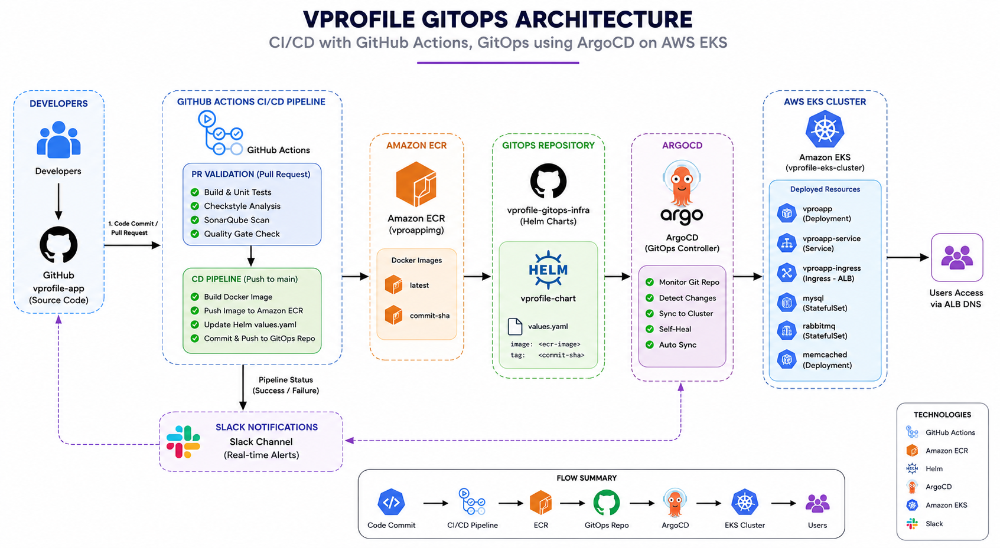

Production-grade GitOps implementation of the VProfile application on AWS EKS using Terraform, ArgoCD, GitHub Actions, Helm, Amazon ECR, SonarQube, and Slack Notifications.

This project demonstrates an end-to-end GitOps workflow for deploying a Java-based application on AWS EKS. The platform follows GitOps principles where application changes are automatically deployed through ArgoCD after successful CI/CD validation and container image publication.